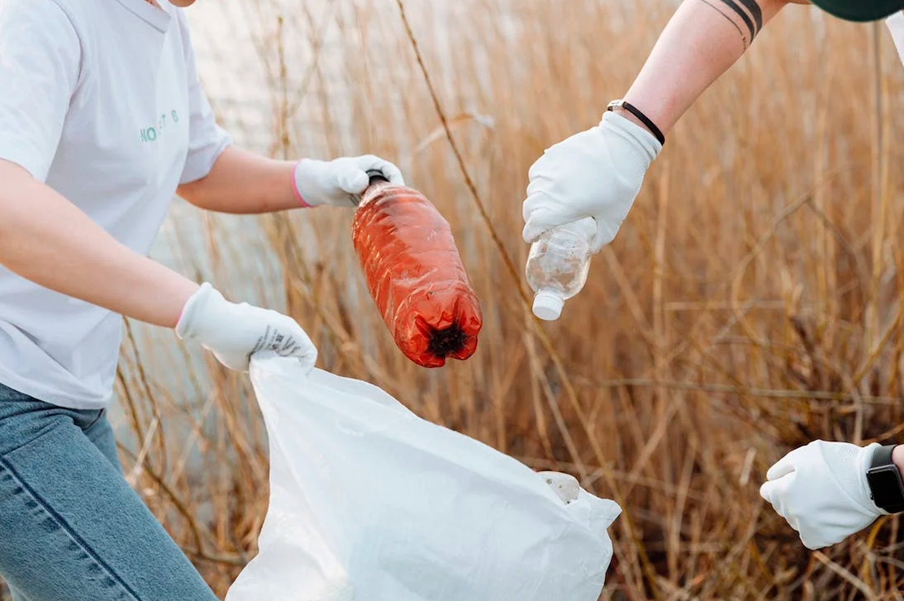

Reducir la compra de agua embotellada es una medida clave para el cuidado del medio ambiente y la sostenibilidad. En lugar de depender de botellas desechables, es importante buscar alternativas más ecológicas y promover el consumo responsable del agua.
La compra de agua embotellada contribuye significativamente a la generación de residuos plásticos y al consumo excesivo de recursos naturales. Al elegir otras opciones, como el uso de filtros de agua en casa o el uso de botellas reutilizables, podemos reducir el impacto ambiental y ahorrar dinero a largo plazo.
Además, es fundamental fomentar la conciencia sobre la calidad del agua del grifo, que en muchos lugares es perfectamente segura para el consumo humano. Los sistemas de tratamiento de agua municipales garantizan que el agua cumpla con los estándares de calidad establecidos.
Reducir la compra de agua embotellada no solo tiene beneficios ambientales, sino también económicos y de salud. Al evitar la compra de botellas de plástico, ayudamos a disminuir la contaminación y contribuimos al uso más eficiente de los recursos naturales.
Las principales razones para no consumir agua embotellada son las siguientes:
- El agua embotellada genera una gran cantidad de basura, debido a que el plástico es el material más utilizado para embotellar líquidos en todo el mundo.
- Su precio es desmesurado, es decir que puede llegar a ser más de 1000 veces el precio del agua del grifo.
- Embotellar agua consume una gran cantidad de recursos naturales, fabricar una botella de agua consume tres veces la cantidad de agua que la misma contendrá.
- Se privatiza el agua potable, ya que es un recurso que cada vez es más escaso. Las multinacionales han puesto el ojo en el "oro azul". Cada vez son más las fuentes de agua potable pública que pasan a manos privadas.
- Su transporte consume millones de litros de combustible.
En resumen, tomar medidas para reducir la compra de agua embotellada es una forma sencilla pero poderosa de contribuir a la protección del medio ambiente y promover la sostenibilidad en nuestra vida diaria. Pequeños cambios de hábitos pueden marcar la diferencia a largo plazo.
 Recolectores de basura plastica, Ilustrativa